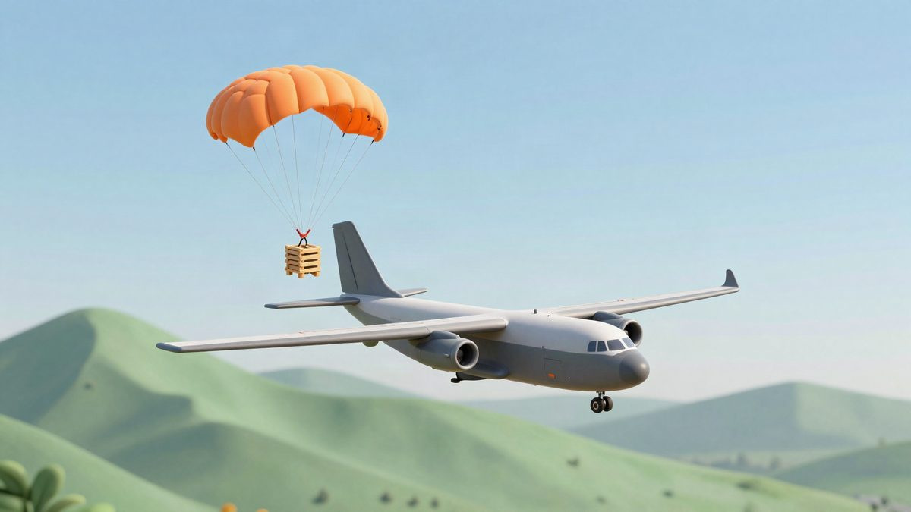
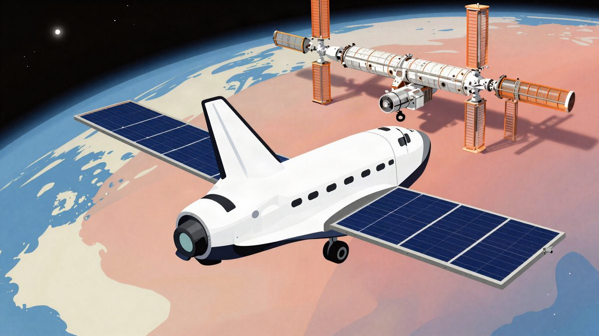
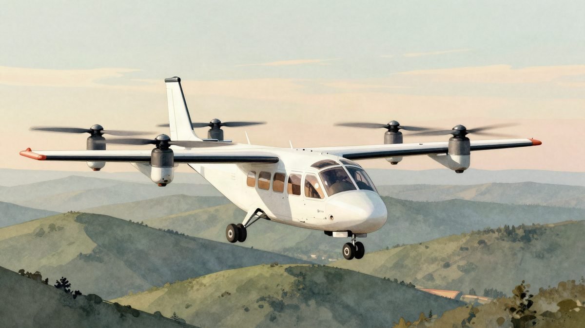

Kineski dron Changying-8 nosi 3,5 tone i uspješno je obavio probni zračni desant s teretom

Kineski transportni dron Changying-8 (Čangjing-8) uspješno je obavio probu transporta i otpuštanja tereta s visine od 300 metara. Paleta je sama izašla iz teretnog prostora, padobran se otvorio kako je planirano, a dron se vratio i sletio. Prema izvoru nosi 3,5 tone i ima domet veći od 3000 kilometara.
Kineski transportni dron Changying-8 (Čangjing-8) obavio je uspješnu probu transporta i otpuštanja tereta. Poletio je po zadanoj ruti, na području odredišta s visine od 300 metara ispustio paletu s teretom, vratio se i mirno slijetio. Riječ je o besposadnoj letjelici klase 7 tona, koju je Kina razvila vlastitim snagama. Vijest je 17. studenoga objavio kineski portal MyDrivers.
Paleta je po naredbi sama izašla iz teretnog prostora, a padobran se otvorio točno kako je planirano. Test je obuhvatio provjeru utovara, unos rute, polijetanje i penjanje, krstarenje, otvaranje vrata teretnog prostora, automatsko otpuštanje tereta, vraćanje padobranskih užadi, povratak i slijetanje te procjenu mjesta pada. Zemaljska kontrolna stanica pratila je let i otpuštanje tereta tijekom cijelog testa. Izvor navodi da su svi sustavi radili stabilno, a podatkovna veza nije prekidana.
Posebno su se provjeravali modularni utovar paleta, otpuštanje s 300 metara, vremenski slijed automatskog izlaska tereta, vraćanje užadi i procjena mjesta pada.
Dimenzije i performanse
Dron je dugačak 17 metara, a raspon krila je 25 metara. Teretni prostor ima volumen od 18 kubnih metara i može primiti više vrsta standardnih zračnih kontejnera te specijalizirane kutije za hladni lanac. Utovar i istovar navodno traju 15 minuta, čime se želi ubrzati logistički obrtaj.
Maksimalna masa pri polijetanju je 7 tona, a nosivost 3,5 tone. Najveći domet je veći od 3000 kilometara. Dron može polijetati i slijetati na visokim platoima, a najkraća staza za polijetanje i slijetanje je 200 metara.
Što slijedi
Changying-8 sada prelazi iz faze provjere u suradnju na konkretnim primjenama. Planirani su regionalni prijevoz i hitna dostava u logistici, hitnim službama, prijevozu na otoke i dostavi svježe robe u hladnom lancu.
Izvor: MyDrivers (快科技)
Povezani članci

Progress MS-36 je krenuo prema ISS-u: nosi robota Teledroid i više od 2,4 tone tereta24. studenoga 2026. Lynk & Co 900L pao s 12 metara i prevrnuo se 10 puta, kabina ostala čitava17. studenoga 2026.
Lynk & Co 900L pao s 12 metara i prevrnuo se 10 puta, kabina ostala čitava17. studenoga 2026.
Xpeng Aridge A868 izveo prijelaz u horizontalni let, domet mu je preko 500 km22. studenoga 2026.